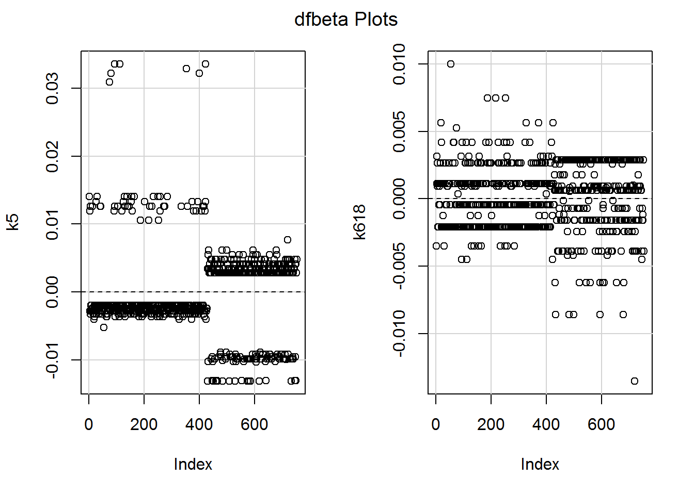

Chapter 8 Logistic regression
By the end of this chapter you will understand:
- How generalised linear models (GLMs) generalise regression to deal with a wider variety of distributions of data.
- How to fit a GLM to binary data (also known as logistic regression).
- How to interpret the results.
- Which diagnostics from linear models do and don’t apply here.
Much herein will be familiar from what we covered for linear regression. The main challenge is that the outcome variable is on the log-odds scale, which makes it trickier to interpret the model intercept and slopes. I provide four different ways to make sense of them, so you can choose which makes most sense to you.
This short video might be helpful too.
8.1 Setup
Let’s load the tidyverse.
library(tidyverse)I’m also going to use knitr to make tables look prettier:
library(knitr)8.2 The dataset
We will look at a different dataset in this chapter (HURRAH; download it here), as analysed by Mroz (1987) and spotted in Fox and Weisberg (2019). The data are from the US Panel Study of Income Dynamics (PSID) in 1975: 753 married white women aged between 30 and 60.
The outcome variable we will examine is whether participants participated in the labour force. So it will be worth thinking through your (implicit or otherwise) theories of what processes might be operating in 1975.
We would expect a more diverse sample these days. You might also ponder what extra information you would want to know and why. For what it’s worth, I’m curious what both wife and husband thought about gender roles and what sort of childcare was available. I’m not sure if it’s relevant, but I am also curious to know how many participants were bisexual (we can’t tell, but it is often wrongly assumed that people in a heterosexual marriage are both heterosexual).
| Variable name | Description |
|---|---|
lfp |
labour-force participation at some point during the year (no/yes). |
lfp_yes |
same as above, but with yes = 1, no = 0 |
k5 |
number of children 5 years old or younger. |
k618 |
number of children 6 to 18 years old. |
age |
in years. |
wc |
wife’s college attendance (no/yes). |
hc |
husband’s college attendance (no/yes). |
lwg |
log expected wage rate; for women in the labour force, the actual wage rate; for women not in the labour force, an imputed value based on the regression of lwg on the other variables. |
inc |
family income exclusive of wife’s income (in $1000s). |
Read in the data:
dat <- read.csv("psid1975.csv")Here is how to view a random sample of rows. (The set.seed command is optional – I am just using it so that I keep getting the same random sample. If you’re curious, Wikipedia’s article is currently fine.)
set.seed(3)
dat %>%
slice_sample(n = 10)## lfp lfp_yes k5 k618 age wc hc lwg inc
## 1 no 0 0 2 43 no no 1.2282799 14.550
## 2 no 0 1 1 30 no yes 0.9791328 22.000
## 3 no 0 0 0 53 no no 0.8861951 21.574
## 4 no 0 0 3 39 no no 0.8532125 28.363
## 5 yes 1 0 2 35 yes no 1.6046872 5.120
## 6 yes 1 0 2 36 yes yes 1.7037485 23.600
## 7 yes 1 0 2 48 no no 1.5448993 9.000
## 8 no 0 0 0 50 yes yes 1.7312460 63.200
## 9 no 0 1 0 30 no yes 1.0167637 19.392
## 10 yes 1 0 1 48 yes yes 1.6549002 70.750The lfp_yes variable was calculated using the line below. This might come in handy for your analyses should you wish to dichotomise a variable.
as.numeric(dat$lfp == "yes")8.3 Warmup activity
8.3.1 Activity
- What do you think might predict participation in the labour force? Have a think before looking at the descriptives and write down your thoughts.
- Set
wcandhcto factors. - Generate a table of descriptive statistics (“Table 1”) using a method of your choosing.
8.3.2 Answer
a. What do you think might predict participation in the labour force? Have a think before looking at the descriptives.
It was too late for me since I had already peeked and can only report my hindsight bias!
b. Set wc and hc to factors.
dat$wc <- factor(dat$wc)
dat$hc <- factor(dat$hc)c. Generate a table of descriptive statistics (“Table 1”) using a method of your choosing.
Here is one we haven’t used yet, in the table1 package. Here is how to use it with a pipe; recall that the dot in data = . is how to refer to the data frame that flowed in via the pipe from the select line above:
library(table1)
dat %>%
select(-lfp_yes) %>%
table1(~ ., data = .)| Overall (N=753) |
|
|---|---|
| lfp | |
| no | 325 (43.2%) |
| yes | 428 (56.8%) |
| k5 | |
| Mean (SD) | 0.238 (0.524) |
| Median [Min, Max] | 0 [0, 3.00] |
| k618 | |
| Mean (SD) | 1.35 (1.32) |
| Median [Min, Max] | 1.00 [0, 8.00] |
| age | |
| Mean (SD) | 42.5 (8.07) |
| Median [Min, Max] | 43.0 [30.0, 60.0] |
| wc | |
| no | 541 (71.8%) |
| yes | 212 (28.2%) |
| hc | |
| no | 458 (60.8%) |
| yes | 295 (39.2%) |
| lwg | |
| Mean (SD) | 1.10 (0.588) |
| Median [Min, Max] | 1.07 [-2.05, 3.22] |
| inc | |
| Mean (SD) | 20.1 (11.6) |
| Median [Min, Max] | 17.7 [-0.0290, 96.0] |
It is straightforward to generate descriptives by group. Since we will be exploring predictors of labour-force participation, it makes sense to group the analyses by whether the participant has worked or not during the past year:
table1(~ k5 + k618 + age + inc | lfp, data = dat)| no (N=325) |
yes (N=428) |
Overall (N=753) |
|
|---|---|---|---|
| k5 | |||
| Mean (SD) | 0.366 (0.637) | 0.140 (0.392) | 0.238 (0.524) |
| Median [Min, Max] | 0 [0, 3.00] | 0 [0, 2.00] | 0 [0, 3.00] |
| k618 | |||
| Mean (SD) | 1.36 (1.33) | 1.35 (1.32) | 1.35 (1.32) |
| Median [Min, Max] | 1.00 [0, 7.00] | 1.00 [0, 8.00] | 1.00 [0, 8.00] |
| age | |||
| Mean (SD) | 43.3 (8.47) | 42.0 (7.72) | 42.5 (8.07) |
| Median [Min, Max] | 44.0 [30.0, 60.0] | 42.0 [30.0, 60.0] | 43.0 [30.0, 60.0] |
| inc | |||
| Mean (SD) | 21.7 (12.7) | 18.9 (10.6) | 20.1 (11.6) |
| Median [Min, Max] | 19.0 [1.50, 96.0] | 17.1 [-0.0290, 91.0] | 17.7 [-0.0290, 96.0] |
And now you have looked - you can no longer hypothesise what might be going on!
Here’s a picture that took too long, but shows what’s possible. It was built up part-by-part, so to understand it you probably need to devote some time to disassembling it.
The labels on each data point are the n’s, so you can see that the pattern beyond 6 children is due to individual households.
I also explicitly named the package dplyr for the select and recode commands because the same names are used for functions in the car package.
dat %>%
dplyr::select(k5, k618, lfp_yes) %>%
pivot_longer(names_to = "children_age",
values_to = "children_num",
cols = !lfp_yes) %>%
mutate(children_age = dplyr::recode(children_age,
k5 = "0 to 5",
k618 = "6 to 18")) %>%
group_by(children_age, children_num) %>%
summarise(perc_lfp = mean(lfp_yes)*100,
n = n()) %>%
ggplot(aes(x = children_num,
y = perc_lfp,
colour = children_age,
label = n)) +
geom_point() +
geom_line(size = 1) +
geom_text(colour = "black",
nudge_y = 1,
nudge_x = 0.1,
hjust = 0,
size = 3) +
xlab("Number of children") +
ylab("% women in paid employment") +
labs(colour = "Children age")## `summarise()` regrouping output by 'children_age' (override with `.groups` argument)8.4 The punchline
We will spend some time going into the arithmetic of logistic regression model coefficients since it helps interpret what the models mean.
So that you have a sense of where this is heading, here is how to fit a model predicting whether women were in paid employment from the number of children in the family aged 5 or younger (k5) and 6 to 18 (k618):
mod_kids <- glm(lfp_yes ~ k5 + k618, data = dat, family = binomial)This is the intercept-only model:
mod_0 <- glm(lfp_yes ~ 1, data = dat, family = binomial)And this command compares the two:
anova(mod_0, mod_kids, test = "Chi")To get a summary use:
summary(mod_kids)Here are confidence intervals:
Confint(mod_kids)The R code involved is almost identical to what we used for linear regression. The main challenge will be interpreting the slopes, but I will share some tips to make this relatively painless.
8.5 Intermezzo: parametric versus nonparametric
“The term nonparametric may have some historical significance and meaning for theoretical statisticians, but it only serves to confuse applied statisticians.”
—G. E. Noether (1984)
Many introductory social science statistics courses explain that if your data are normally distributed, then you use parametric statistics, otherwise you use nonparametric statistics. Or that the data can be parametric or nonparametric.
Both claims are false.
The parametric versus nonparametric distinction refers to statistical models, not the data. It simply refers to whether the distributions involved are assumed to have a known mathematical form. If a model assumes a particular distribution, then it is parametric (Wolfowitz, 1942). We have already seen that you can check (to some extent) whether model assumptions are satisfied.
You can think of parameters as being like knobs on an old radio. Tuning the knobs changes the parameters.

The normal distribution has two parameters, mean and standard deviation:

We will be exploring a parametric approach to modelling binary data (whether or not someone was in paid employment) in this chapter, using a special case of the binomial distribution with size = 1. There is one parameter: the probability, and values are either 0 or 1.
This distribution is somewhat easier to grasp than the curve of a normal distribution, though we will encounter a logistic-al irritation in using it in practice.
8.6 What is a generalised linear model?
As the name suggests, generalised linear models generalise the linear model. (Not to be confused with a general linear model – different thing.) They are initialised as GLM, which is pronounced “glim.”
GLMs have three components (see Fox and Weisberg, 2019, pp. 272-275 for more detail):
A specification of the error distribution. For linear models, this is a normal distribution.
A linear formula linking outcome to predictors and the \(\beta\)’s to be estimated: \[ g(y) = \beta_0 + \beta_1 x_1 + \beta_1x_2 + \cdots + \beta_n x_n \] The right hand side is identical to linear models. The left hand side, \(g(y)\), is mildly different to the usual \(y\) and is there to ensure the maths works for different shapes of distribution.
GLMs also have a link function – that’s the \(g\). For linear models, \(g(y) = y\), what is known as the identity link – it just passes the input unchanged to the output. For logistic regression, \(g\) is log-odds, also known as the logit. The formula then is \[ \log\frac{p}{1-p}= \beta_0 + \beta_1 x_1 + \beta_1x_2 + \cdots + \beta_n x_n \] where \(p\) is the probability of an event happening (e.g., being in work).
So, a linear regression model is a generalised linear model with a normal error distribution and an identity link. Logistic regression is a generalised linear model with a binomial error distribution and a log-odds (logit) link.
The error distribution and link are together called the family. By default, glm chooses a sensible link for you so in practice you just have to name the error distribution.
8.7 What is the log function again…?
To interpret logistic regression models we need to understand log-odds and to understand log-odds we need to grasp logs. I’m aware that it may be some time since you last used them!
There are two aspects to revise: the arithmetic and why logs are typically used.
8.7.1 The arithmetic
The arithmetic is easy: the log is simply the inverse of “to the power of” or exponentiation.
Here is an example of exponentiation:
\[ 10^n = \underbrace{10 \times \dots \times 10}_{\mathrm{n\ times}} \]
So \(10^2 = 100\) and \(10^4 = 10000\) and so on. More generally, with \(b^n\), the \(b\) is called the base and \(n\) is the exponent.
Log just reverses this.
Suppose with want to find out what to raise 10 to the power of to get 1000, then we just calculate
\[ \log_{10}(100) \] In R:
log(100, base = 10)## [1] 2So \({\color{magenta} {10}}^{\color{blue} 2} = 100\) and \(\log_{\color{magenta} {10}}(100) = \color{blue} 2\).
Let’s try another base, 2. Two to the power of five is…
2^5## [1] 32… 32.
8.7.1.1 Activity
Two to the power of what is 1024…?
8.7.1.2 Answer
log(1024, base = 2)## [1] 10It’s 10. Let’s check.
2^10## [1] 1024So much for the arithmetic; onto some intutions for why it is used…
8.7.2 Why log?
Sadly, these days we are very aware of exponential and log functions since they are used when communicating data on the Covid-19 pandemic.
Suppose some quantity doubles over time; let’s take as an example the number of cat GIFs in my saved images over time:
doubles <- tibble(month = 0:9,
cat_GIFs = 2^month)
doubles %>%
kable(col.names = c("Month", "Number of cat GIFs"))| Month | Number of cat GIFs |
|---|---|
| 0 | 1 |
| 1 | 2 |
| 2 | 4 |
| 3 | 8 |
| 4 | 16 |
| 5 | 32 |
| 6 | 64 |
| 7 | 128 |
| 8 | 256 |
| 9 | 512 |
I started off with one GIF. As each month passes, the number of GIFs doubles. To find the number of GIFs at a particular time, use \(2^{\mathit{month}}\). Here is 5 months into my stash:
2^5## [1] 32Here is a picture of GIF growth:
doubles %>%
ggplot(aes(month, cat_GIFs)) + geom_point() +
labs(x = "Month", y = "Number of cat GIFs") +
scale_x_continuous(breaks = seq(0,9,2)) +
geom_function(fun = function(x) 2^x, n = 400)As we saw above, we can also run \(2^\mathit{month}\) in reverse. Given a particular number of cat GIFs, say 32, how many times did the original number double to get there? Simply calculate \(\log_2(32)\):
log(32, base = 2)## [1] 5Often it is easier to see exponential relationships and any changes in relationships over time if they are plotted on a straight line. A way to straighten out exponential growth is to log the y-axis whilst keeping the original values at each tick point on the axis:
doubles %>%
ggplot(aes(month, cat_GIFs)) + geom_point() +
coord_trans(y = "log2") + # this line transforms the axis
labs(x = "Month", y = "Number of cat GIFs") +
scale_x_continuous(breaks = seq(0,9,2)) +
scale_y_continuous(breaks = 2^seq(0,9,1)) +
# this scale_y line says where to place the labels
geom_function(fun = function(x) 2^x, n = 400)We can also log the values, so that the y-axis now says how many times the number of GIFs has doubled.
doubles %>%
ggplot(aes(month, log(cat_GIFs,2))) + geom_point() +
labs(x = "Month", y = "Logged number of cat GIFs") +
scale_y_continuous(breaks = seq(0,10,2)) +
scale_x_continuous(breaks = seq(0,9,2)) +
geom_function(fun = function(x) x, n = 400)
I hope that provides some intuitions for what the log function does. Roughly, it transforms a process that multiplies, and can be hard to understand on the original scale, into a process that is additive.
8.8 Intercept-only models again
For linear regression, the intercept in an intercept-only model was the mean of the the outcome variable. Intercepts in GLMs work the same; however, now we have the mild complication of the link function which is part of the arithmetic that makes GLMs work.
The mean of the binary variable, lfp_yes, is:
mean(dat$lfp_yes)## [1] 0.5683931This is the proportion of women who were in paid employment (do you see why the mean is a proportion here?).
table(dat$lfp)##
## no yes
## 325 428Now let’s see what logistic regression gives us:
mod_intercept <- glm(lfp_yes ~ 1, data = dat, family = binomial)
summary(mod_intercept)##
## Call:
## glm(formula = lfp_yes ~ 1, family = binomial, data = dat)
##
## Deviance Residuals:
## Min 1Q Median 3Q Max
## -1.296 -1.296 1.063 1.063 1.063
##
## Coefficients:
## Estimate Std. Error z value Pr(>|z|)
## (Intercept) 0.27530 0.07358 3.742 0.000183 ***
## ---
## Signif. codes: 0 '***' 0.001 '**' 0.01 '*' 0.05 '.' 0.1 ' ' 1
##
## (Dispersion parameter for binomial family taken to be 1)
##
## Null deviance: 1029.7 on 752 degrees of freedom
## Residual deviance: 1029.7 on 752 degrees of freedom
## AIC: 1031.7
##
## Number of Fisher Scoring iterations: 4Most of that will look very familiar – the coefficients, standard error, p-values (though now of a \(z\)-value rather than \(t\)) – however, the intercept is not the mean of lfp_yes.
coef(mod_intercept)## (Intercept)
## 0.275298This is actually the log-odds of being in paid work, which is arithmetically related to the probability. So onto the next bit of arithmetic…
8.9 Odds and log odds
Odds are alternatives to probabilities for quantifying uncertainty. The probability of getting a 20 on one roll of a fair 20-sided die are \(\frac{1}{20}\) or 0.05. The odds are 1 to 19 or \(\frac{1}{19}\).
There are 20 possible outcomes, each equally likely. We are interested in the odds of one of those outcomes. The odds are the ratio of the probability that an event will happen to the probability that it will not. For the 20-sided die case, since every outcome is equally likely, we can just use the number of outcomes directly in the formula.
More generally, if the probability of an event is \(p\), then the odds are
\[ \mathit{odds} = \frac{p}{1-p} \]
If the probability of an event happening is \(p\), then \(1-p\) is the probability that it will not happen, hence the bottom line of that fraction.
If you do some arithmetic (or Google) you will see that it is possible to go in reverse:
\[ p = \frac{\mathit{odds}}{1+\mathit{odds}} \]
The log odds are the log of the odds, usually the natural log, i.e., log base \(e = 2.718282\ldots\), which is what R provides by default. This can be written \(\log_e\) or \(\ln\). So the log odds of getting a 20 on one throw of a 20-sided die are:
log(1/19)## [1] -2.944439Personally, I don’t find \(-2.94\) a particularly meaningful number! And actually, later I will share some tricks so that you don’t have to even think about what it means. However, I think it is important to get a sense of some example landmark odds and log odds along a range of probabilities. Fifteen minutes spent staring at this table will come in handy (Inf is “infinity”).
| Probability | Odds | Log odds (logit) |
|---|---|---|
| 0.0 | 0.00 | -Inf |
| 0.1 | 0.11 | -2.20 |
| 0.2 | 0.25 | -1.39 |
| 0.3 | 0.43 | -0.85 |
| 0.4 | 0.67 | -0.41 |
| 0.5 | 1.00 | 0.00 |
| 0.6 | 1.50 | 0.41 |
| 0.7 | 2.33 | 0.85 |
| 0.8 | 4.00 | 1.39 |
| 0.9 | 9.00 | 2.20 |
| 1.0 | Inf | Inf |
Here are clues for where to look:
- Look at what the odds and log odds are when the probability is 0.5.
- Look at probabilities 0 and 1.
- Look for symmetry in the log odds above and below probability 0.5.
- The odds are also symmetric around 0.5, though this is a (little) more difficult to see. Try 0.2 and 0.8 probability. The odds of a 0.2 probability are \[ \frac{0.2}{1 - 0.2} = \frac{0.2}{0.8} = \frac{2}{8} = \frac{1}{4} = 0.25 \] The odds of a 0.8 probability are \[ \frac{0.8}{1 - 0.8} = \frac{0.8}{0.2} = \frac{8}{2} = \frac{4}{1} = 4 \] So the fraction just turns upside down.
Finally, here is a picture showing the relationship between log-odds and probability:
ggplot() +
xlim(-6, 6) +
geom_hline(yintercept = 0.5, colour = "darkgrey") +
geom_function(fun = plogis, n = 200) +
ylab("Probability") +
xlab("Log-odds (logit)")Note how the relationship is mostly non-linear, except for a patch in the middle where it is linear. The log-odds stretch out to negative and plus infinity, whereas probabilities are bound between 0 and 1. The probability for a log-odds of 6 is 0.9975274. The probability for a log-odds of 15, far off the scale on this graph, is 0.9999939. It never quite reaches 1 or, in the opposite direction, 0.
To summarise then, probability, odds, and log-odds are different and interchangeable ways to quantify how sure you are that something is going to happen.
8.10 Back to that intercept
We know the proportion of women in paid work:
mean(dat$lfp_yes)## [1] 0.5683931Assuming a random sample, this is also an estimate of the probability that someone chosen at random from the larger population will be in paid work. Let’s then calculate the odds:
the_odds <- mean(dat$lfp_yes) / (1-mean(dat$lfp_yes))
the_odds## [1] 1.316923Now the log-odds:
log(the_odds)## [1] 0.275298Back to the model coefficient:
coef(mod_intercept)## (Intercept)
## 0.275298HURRAH!
We could also go in reverse from the intercept. The function exp(x) calculates \(e^x\) which is the inverse of \(\log_e\). This gives us the odds again:
the_odds_again <- exp(coef(mod_intercept))
the_odds_again## (Intercept)
## 1.316923Now to get the probability:
the_odds_again / (1+the_odds_again)## (Intercept)
## 0.5683931\[ \mathit{HURRAH}^\mathit{HURRAH}! \]
Now we have got the hang of intercept-only models, onto slopes…
8.11 Interpreting model slopes
Look again at the graph:
Our hindsight hypothesis (having looked at the picture) – not a good way to do science, but fine for pedagogy – is that the number of children aged 5 or under will predict labour-force participation, but the number aged 6 or over will be irrelevant.
mod_children <- glm(lfp_yes ~ k5 + k618,
data = dat,
family = binomial)
summary(mod_children)##
## Call:
## glm(formula = lfp_yes ~ k5 + k618, family = binomial, data = dat)
##
## Deviance Residuals:
## Min 1Q Median 3Q Max
## -1.4566 -1.3712 0.9634 0.9953 1.7617
##
## Coefficients:
## Estimate Std. Error z value Pr(>|z|)
## (Intercept) 0.44479 0.11106 4.005 6.20e-05 ***
## k5 -0.87926 0.15817 -5.559 2.71e-08 ***
## k618 0.02730 0.05767 0.473 0.636
## ---
## Signif. codes: 0 '***' 0.001 '**' 0.01 '*' 0.05 '.' 0.1 ' ' 1
##
## (Dispersion parameter for binomial family taken to be 1)
##
## Null deviance: 1029.75 on 752 degrees of freedom
## Residual deviance: 994.53 on 750 degrees of freedom
## AIC: 1000.5
##
## Number of Fisher Scoring iterations: 4And indeed that is what we get. But how should we interpret those coefficients? Here is a suite of options. Any one of these would and has been publishable (see if you can spot them in the literature), but they are not equally interpretable.
8.11.1 Interpret on the log-odds scale
This summary is a linear model on the log-odds (i.e., logit) scale. So we can interpret as before, just always ensuring we remember that the outcome units are log-odds rather than probabilities.
8.11.1.1 Activity
Have a go at interpreting the intercept and slopes, focussing on the direction of effects and whether they are statistically significant.
8.11.1.2 Answer
The intercept is actually interpretable (for a change!). This gives the log-odds of being in work when a family has zero children: 0.44.
For every extra child aged 0-5, the log odds of being in work decrease by 0.88, \(z = -5.6\), \(p < .001\).
There is no statistically significant effect for children aged 6 or over; slope = 0.03, \(z = 0.5\), \(p = 0.64\).
8.11.2 Interpret using the “divide-by-4” approximation
Two of my favourite statisticians, Andrew Gelman and Jennifer Hill (2007, p. 82), provide a handy approximation for transforming slopes on the log-odds scale to changes in probability:
“As a rule of convenience, we can take logistic regression coefficients (other than the constant term) and divide them by 4 to get an upper bound of the predictive difference corresponding to a unit difference in x. This upper bound is a reasonable approximation near the midpoint of the logistic curve, where probabilities are close to 0.5.”
(The constant term is another word for the intercept.)
Here is the rule in a picture:
Where the the dashed purple line overlaps the curve, the probability \(p = 0.5 + \frac{\mathit{logit}}{4}\).
8.11.2.1 Activity
Can you decode that paragraph from Gelman and Hill and use it to interpret the coefficients?
coef(mod_children)## (Intercept) k5 k618
## 0.44478849 -0.87925889 0.027298338.11.2.2 Answer
We can use the coefficients:
coef(mod_children)## (Intercept) k5 k618
## 0.44478849 -0.87925889 0.02729833Drop the intercept (or you could just do so by not looking at it!):
coef(mod_children)[-1]## k5 k618
## -0.87925889 0.02729833Divide by 4 and round (again, you could do this in other ways):
(coef(mod_children)[-1] / 4) %>%
round(2)## k5 k618
## -0.22 0.01For every extra child aged 5 or under, the probability of being work in decreases by (at most) 0.22.
The effect for children aged 6-18 was not statistically significant; moreover, the sample estimate is minuscule: every extra child adds 0.01 to the probability of being in work.
8.11.3 Interpret using odds
There is an easy way to transform the predictors so that interpretation are on the odds scale, which are more interpretable than log-odds. Let’s explore why it works – skip to the So What? section on a first read if you wish.
8.11.3.1 Some arithmetic
Here is the model formula again:
\[ \log_e\frac{p}{1-p}= \beta_0 + \beta_1 x_1 + \beta_1x_2 + \cdots + \beta_n x_n \]
The left hand side gives the log odds and the right hand side is the linear formula we know and love from linear regression.
If we exponentiate both sides, this removes the log on the left and, er, complicates the right:
\[ \frac{p}{1-p}= e^{\beta_0 + \beta_1 x_1 + \beta_1x_2 + \cdots + \beta_n x_n} \]
The left hand size now gives the odds. We can simplify the right to:
\[ \frac{p}{1-p}= e^{\beta_0} \times e^{\beta_1 x_1} \times e^{\beta_1 x_2} \times \cdots \times e^{\beta_n x_n} \] since \(b^{x+y} = b^x b^y\). Note how all the additions have become multiplications.
Since \(b^{xy} = (b^x)^y\) we can separate out the exponentiated slopes, which is useful because it is very easy to get these from a glm model summary (by exping the slopes).
\[ \frac{p}{1-p}= e^{\beta_0} \times (e^{\beta_1})^{x_1} \times (e^{\beta_2})^{x_2} \times \cdots \times (e^{\beta_n})^{x_n} \]
This is much easier to read if we rewrite \(e^x\) as \(\exp({x})\):
\[ \frac{p}{1-p}= \exp({\beta_0}) \times \exp({\beta_1})^{x_1} \times \exp({\beta_1})^{x_2} \times \cdots \times \exp({\beta_n})^{x_n} \]
8.11.3.2 What does this mean? (Or: so what?)
Here are the coefficients from our model predicting being in paid work from number of children:
coef(mod_children)## (Intercept) k5 k618
## 0.44478849 -0.87925889 0.02729833We can exponentiate (and round) them to:
exp(coef(mod_children)) %>% round(2)## (Intercept) k5 k618
## 1.56 0.42 1.03The coefficients for the slopes are called odds ratios.
Slot them back into the formula:
\[ \frac{p}{1-p}= 1.56 \times 0.42^{\mathtt{k5}} \times 1.03^{\mathtt{k618}} \]
This gives us an interpretation of the (exponentiated) coefficients in terms of odds.
For every increase in k5 (children aged 0 to 5) by one child, the odds of being in work multiply by 0.42; in other words they are \(100(1 - 0.42) = 58\%\) lower.
Let’s try plugging some numbers in, first with no children:
\[ \begin{array}{rcl} \frac{p}{1-p} & = & 1.56 \times 0.42^{0} \times 1.03^{0}\\ & = & 1.56 \times 1 \times 1 \\ & = & 1.56 \end{array} \]
So the odds of being in work if you have no children are 1.56 – i.e., the same as the exponentiated intercept.
Let’s try one child aged 0 to 5 and no children aged 6 or over: \[ \begin{array}{rcl} \frac{p}{1-p} & = & 1.56 \times 0.42^{1} \times 1.03^{0}\\ & = & 1.56 \times 0.42 \times 1 \\ & = & 0.66 \end{array} \]
And two children aged 0 to 5, again with no children aged 6 or over:
\[ \begin{array}{rcl} \frac{p}{1-p} & = & 1.56 \times 0.42^{2} \times 1.03^{0}\\ & = & 1.56 \times 0.18 \times 1 \\ & = & 0.28 \end{array} \]
8.11.4 Interpret using predicted probabilities
This is probably my favourite way to get to grips with how a model works and R does all the hard work for us. The idea is simply to ask the model for predicted probabilities for a range of inputs, chosen to help you and readers see how the outcome variable is related to the predictors.
There are two ways to do it in R. The second is easier (and you would be forgiven for trying it first) but the first explains what’s going on.
8.11.4.1 Using a customs predictions table
The recipe is as follows. First, generate a data frame with values for predictors for which you would like predictions. This is a data frame with one column for each variable in the model.
The expand.grid command is handy for this as it generates all combinations of the values you provide.
predictions <- expand.grid(k5 = 0:3,
k618 = c(0,5))
predictions## k5 k618
## 1 0 0
## 2 1 0
## 3 2 0
## 4 3 0
## 5 0 5
## 6 1 5
## 7 2 5
## 8 3 5Recall that k5 was “statistically significant” but k618 not, so I have chosen a range of values for k5 which show the association and also two extremes for k618.
Now use R’s predict command, passing this predictions table into its newdat parameter. We can get the predictions on the log-odds scale or (more useful) as probabilities. For the latter, use the option type = "response".
I generally save the result onto the predictions data frame:
predictions$lfp_logodds <- predict(mod_children, # the model
newdata = predictions)
predictions$lfp_prob <- predict(mod_children,
newdata = predictions,
type = "response")I will also add on the odds ratios, for completeness:
predictions$lfp_odds <- exp(predictions$lfp_logodds)Have a look (I’m piping them through kabel from the knitr package to change the number of decimal places):
predictions %>%
kable(digits = c(0,0,2,2,2))| k5 | k618 | lfp_logodds | lfp_prob | lfp_odds |
|---|---|---|---|---|
| 0 | 0 | 0.44 | 0.61 | 1.56 |
| 1 | 0 | -0.43 | 0.39 | 0.65 |
| 2 | 0 | -1.31 | 0.21 | 0.27 |
| 3 | 0 | -2.19 | 0.10 | 0.11 |
| 0 | 5 | 0.58 | 0.64 | 1.79 |
| 1 | 5 | -0.30 | 0.43 | 0.74 |
| 2 | 5 | -1.18 | 0.24 | 0.31 |
| 3 | 5 | -2.06 | 0.11 | 0.13 |
The challenge is to pick values for the predictors which illustrate how the model works. You could then plot these using ggplot.
predictions %>%
ggplot(aes(x = k5,
y = lfp_prob,
colour = factor(k618))) +
geom_point() +
geom_line() +
labs(x = "Number of children aged 0 to 5",
y = "Probability of being in work",
colour = "Children 6-18") +
ylim(0,1)By the way, predictions work for linear models fitted using lm too and can be particularly handy for making sense of interactions or other non-linear effects.
8.11.4.2 Use ggeffects
Every few months someone creates a helpful R package for creating or understanding models. The ggeffects package is tear-jerkingly beautiful. See Lüdecke (2018) for more information. There are also helpful examples on the package webpage.
library(ggeffects)The command for making predictions is called ggpredict and wants a model and at least one variable name. It can generate predictions for up to four variables whilst holding the others at some constant.
Let’s start with one, k5.
ggpredict(mod_children, terms = "k5")##
## # Predicted probabilities of lfp_yes
## # x = k5
##
## x | Predicted | SE | 95% CI
## -----------------------------------
## 0 | 0.62 | 0.08 | [0.58, 0.65]
## 1 | 0.40 | 0.15 | [0.33, 0.47]
## 2 | 0.22 | 0.29 | [0.13, 0.33]
## 3 | 0.10 | 0.45 | [0.05, 0.22]
##
## Adjusted for:
## * k618 = 1.00## Standard errors are on the link-scale (untransformed).It tries to guess sensible values to hold other predictions at. Here it has held k618 at 1.
The package also comes with a plot function which automatically gives you a ggplot object.
ggpredict(mod_children, terms = c("k5")) %>%
plot()
The grey area is a 95% confidence band.
You can then modify this plot as you would any other ggplot object:
ggpredict(mod_children, terms = c("k5")) %>%
plot() +
geom_point() +
xlab("Number of children aged 0 to 5") +
ylab("Probability of being in the labour force") +
labs(title = NULL) +
ylim(0,1)Before publication (or module assignment), be sure to explain in your Figure captions what exactly a graph shows, i.e., in this case that the number of children ages 6 to 18 has been held at 1.
8.12 Diagnostics
Good news: we will use the same diagnostic tools as for linear regression. Actually (slightly) fewer will now apply.
Load the car package:
library(car)8.12.1 Check the residual distribution
You can check for outlying residuals as before:
outlierTest(mod_children)## No Studentized residuals with Bonferroni p < 0.05
## Largest |rstudent|:
## rstudent unadjusted p-value Bonferroni p
## 92 1.778802 0.075272 NADo not check if the residuals are normally distributed – they will not be and that is fine in GLM land.
8.12.2 Check that the residual mean is constant
The residualPlots works as before, except when you run it with default setting on this model and data it will complain that “all data are on boundary of neighbourhood, make span bigger.” The “span” refers to how much smoothing the smoother does!
residualPlots(mod_children,
tests = FALSE)By default the span of the smoother is 2/3. For this model and data, setting it to 1 works fine:
residualPlots(mod_children,
tests = FALSE,
smooth = list(span = 1))The patterns in the data points you see here are due to the outcome variable only taking on a 0 or a 1. This is to be expected. Focus on the magenta curves and ensure that they aren’t curves (if you see what I mean…?): they should be straight lines along zero. And indeed here they are.
The variance does not need to be constant for GLMs other than the normal/Gaussian model.
8.12.3 Linearity of predictors
We can use crPlots again to obtain component-plus-residual plots.
crPlots(mod_children, smooth = list(span = 1))
These too are fine – no obvious curves, though potentially something worth exploring towards the upper end of k618 where there isn’t much data (i.e., few families over 6 children). Again I had to fiddle with the span parameter to stop the smoother complaining.
8.12.4 Influence
Again everything we covered in the previous session applies here. Here’s a quick way to look at potentially influential points:
influence.measures(mod_children) %>%
summary()## Potentially influential observations of
## glm(formula = lfp_yes ~ k5 + k618, family = binomial, data = dat) :
##
## dfb.1_ dfb.k5 dfb.k618 dffit cov.r cook.d hat
## 18 -0.03 -0.02 0.09 0.09 1.01_* 0.00 0.01_*
## 53 -0.08 -0.03 0.15 0.15 1.04_* 0.01 0.04_*
## 74 -0.08 0.17 0.08 0.20_* 1.01_* 0.02 0.02_*
## 79 -0.03 0.18 0.01 0.18 1.01 0.02 0.01_*
## 92 0.02 0.18 -0.07 0.20_* 1.01 0.02 0.02_*
## 111 0.02 0.18 -0.07 0.20_* 1.01 0.02 0.02_*
## 186 -0.07 0.06 0.11 0.14 1.01_* 0.01 0.01_*
## 217 -0.07 0.06 0.11 0.14 1.01_* 0.01 0.01_*
## 252 -0.07 0.06 0.11 0.14 1.01_* 0.01 0.01_*
## 327 -0.03 -0.02 0.09 0.09 1.01_* 0.00 0.01_*
## 352 0.00 0.18 -0.03 0.19 1.01 0.02 0.01_*
## 371 -0.03 -0.02 0.09 0.09 1.01_* 0.00 0.01_*
## 400 -0.03 0.18 0.01 0.18 1.01 0.02 0.01_*
## 423 0.02 0.18 -0.07 0.20_* 1.01 0.02 0.02_*
## 424 -0.03 -0.02 0.09 0.09 1.01_* 0.00 0.01_*
## 430 -0.01 -0.07 0.03 -0.08 1.02_* 0.00 0.02_*
## 434 0.05 0.03 -0.13 -0.14 1.01 0.01 0.01_*
## 447 0.02 -0.07 -0.02 -0.08 1.02_* 0.00 0.02_*
## 450 -0.01 -0.07 0.03 -0.08 1.02_* 0.00 0.02_*
## 459 -0.01 -0.07 0.03 -0.08 1.02_* 0.00 0.02_*
## 462 0.01 -0.07 0.00 -0.08 1.02_* 0.00 0.01_*
## 463 0.02 -0.07 -0.02 -0.08 1.02_* 0.00 0.02_*
## 466 -0.01 -0.07 0.03 -0.08 1.02_* 0.00 0.02_*
## 482 0.05 0.03 -0.13 -0.14 1.01 0.01 0.01_*
## 483 0.00 -0.07 0.01 -0.07 1.02_* 0.00 0.01_*
## 484 0.00 -0.06 0.01 -0.06 1.02_* 0.00 0.02_*
## 499 0.05 0.03 -0.13 -0.14 1.01 0.01 0.01_*
## 509 -0.01 -0.07 0.03 -0.08 1.02_* 0.00 0.02_*
## 528 -0.01 -0.07 0.03 -0.08 1.02_* 0.00 0.02_*
## 553 0.01 -0.07 0.00 -0.08 1.02_* 0.00 0.01_*
## 574 -0.01 -0.07 0.03 -0.08 1.02_* 0.00 0.02_*
## 580 0.00 -0.07 0.01 -0.07 1.02_* 0.00 0.01_*
## 585 0.00 -0.07 0.01 -0.07 1.02_* 0.00 0.01_*
## 595 0.05 0.03 -0.13 -0.14 1.01 0.01 0.01_*
## 605 0.02 -0.06 -0.01 -0.06 1.02_* 0.00 0.02_*
## 617 0.00 -0.07 0.01 -0.07 1.02_* 0.00 0.01_*
## 641 0.01 -0.07 0.00 -0.08 1.02_* 0.00 0.01_*
## 678 0.05 0.03 -0.13 -0.14 1.01 0.01 0.01_*
## 715 0.00 -0.05 0.02 -0.06 1.02_* 0.00 0.02_*
## 720 0.10 0.04 -0.20 -0.21_* 1.02_* 0.02 0.03_*
## 732 -0.01 -0.07 0.03 -0.08 1.02_* 0.00 0.02_*
## 746 0.05 -0.07 -0.07 -0.11 1.03_* 0.00 0.03_*
## 750 0.02 -0.07 -0.02 -0.08 1.02_* 0.00 0.02_*We could also look at (my favourite) the DFBETA plots:
dfbetaPlots(mod_children)
The numbers are minuscule, relative to the model slopes, so nothing to worry about. I am curious about the largest DFBETA for k618, though. The raw descriptives showed one person with eight children aged 6 to 18 who was in work. Is the slope being ever so slightly dragged up by her data?
dfbeta(mod_children) %>%
as.data.frame() %>%
filter(k618 > .009)## (Intercept) k5 k618
## 53 -0.009795223 -0.005237558 0.009994706That’s row 53, so let’s slice the data to look:
dat %>%
slice(53)## lfp lfp_yes k5 k618 age wc hc lwg inc
## 1 yes 1 0 8 37 no no 0.1625193 16.258Yes, this is the one person with 8 children! But it doesn’t matter since the dataset is so large and the DFBETA minuscule.
8.12.5 Multicolinearity
Yep, you can still check the variance inflation factors (VIFs) and interpret as before!
vif(mod_children)## k5 k618
## 1.010858 1.010858These are both close to 1 so all is good.
We could try adding multicollinearity, just to be sure that the VIFs work… Here I’m adding a new variable called kids which is the sum of k5 and k618:
dat <- dat %>%
mutate(kids = k5 + k618)Here’s a model with both k618 and kids as predictors:
high_vif_maybe <- glm(lfp_yes ~ k618 + kids,
data = dat, family = binomial)And here are the VIFs:
vif(high_vif_maybe)## k618 kids
## 9.189766 9.189766They are high as you might expect, given how the kids variable was created.
8.13 A challenge
8.13.1 Activity
There are several other variables in the dataset which you can now explore.
- Does a model with the following predictors added predict better than one with only the number of children?
| Variable name | Description |
|---|---|
age |
in years. |
wc |
wife’s college attendance (no/yes). |
hc |
husband’s college attendance (no/yes). |
inc |
family income exclusive of wife’s income (in $1000s). |
- Interpret the coefficients, using a method of your choice
- Try some diagnostics (this week you have some more creative freedom) – do you want to do anything as a result of what you find?
8.13.2 (An) Answer
a. Does a model with the following predictors [list of predictors] added predict better than one with only the number of children?
Here’s another way to add predictors to a previously fitted model; however, copy and paste works fine too!
mod_more <- update(mod_children,
. ~ . + age + wc + hc + inc)Does this more complex model explain the data better?
anova(mod_children, mod_more, test = "Chi")## Analysis of Deviance Table
##
## Model 1: lfp_yes ~ k5 + k618
## Model 2: lfp_yes ~ k5 + k618 + age + wc + hc + inc
## Resid. Df Resid. Dev Df Deviance Pr(>Chi)
## 1 750 994.53
## 2 746 922.27 4 72.259 7.568e-15 ***
## ---
## Signif. codes: 0 '***' 0.001 '**' 0.01 '*' 0.05 '.' 0.1 ' ' 1For what it’s worth (we haven’t checked any model diagnostics yet, so this could be nonsense), yes, the model fits better, \(\chi^2(4) = 72.3\), \(p < .001\).
b. Interpret the coefficients, using a method of your choice
I’m going to use two approaches. First the divide-by-four approach, using the original model summary to work out the direction of effects and whether they are statistically significant:
summary(mod_more)##
## Call:
## glm(formula = lfp_yes ~ k5 + k618 + age + wc + hc + inc, family = binomial,
## data = dat)
##
## Deviance Residuals:
## Min 1Q Median 3Q Max
## -2.0971 -1.1138 0.6442 0.9980 2.1293
##
## Coefficients:
## Estimate Std. Error z value Pr(>|z|)
## (Intercept) 3.764814 0.626022 6.014 1.81e-09 ***
## k5 -1.470687 0.195576 -7.520 5.49e-14 ***
## k618 -0.087870 0.067298 -1.306 0.192
## age -0.062877 0.012655 -4.969 6.75e-07 ***
## wcyes 1.003779 0.222230 4.517 6.28e-06 ***
## hcyes 0.119029 0.204072 0.583 0.560
## inc -0.032105 0.008057 -3.985 6.76e-05 ***
## ---
## Signif. codes: 0 '***' 0.001 '**' 0.01 '*' 0.05 '.' 0.1 ' ' 1
##
## (Dispersion parameter for binomial family taken to be 1)
##
## Null deviance: 1029.75 on 752 degrees of freedom
## Residual deviance: 922.27 on 746 degrees of freedom
## AIC: 936.27
##
## Number of Fisher Scoring iterations: 3Here are the coefficients, for ease of reading:
(coef(mod_more)[-1] / 4) %>% round(2)## k5 k618 age wcyes hcyes inc
## -0.37 -0.02 -0.02 0.25 0.03 -0.01All statistically significant effects have p’s far below .05.
As before, the number of children aged 0 to 5 is negatively associated with the probability of being in work; each extra child reduces the probability by at most 0.37. There was no statistically significant effect for number of children aged 6 to 18.
The woman’s age was a statistically significant predictor; each extra year reduced the probability by 0.06.
Whether the woman had a college education was a statistically significant predictor and increased the probability of being in work by at most 0.25. There was no statistically significant effect for the husband’s college education.
Finally, family income, excluding the woman’s income, had a significant effect too. Each extra $1000 reduces the probability of her being in work by 0.01.
Here is a picture.
ggpredict(mod_more, terms = c("k5", "wc", "age [30,45,60]")) %>%
plot() +
xlab("Number of children aged 0 to 5") +
ylab("Probability of being in work") +
labs(title = NULL, colour = "Woman attended college") +
ylim(0,1) +
theme_gray() +
theme(legend.position="bottom")Adjusted for: number of children aged 6 to 18 was fixed at 1, husband fixed at no college education, and income at the mean, $2013.
(Wasn’t that fantastically easy? Most of the code was just fiddling with the layout.)
How about income?
ggpredict(mod_more, terms = c("inc", "wc", "k5")) %>%
plot() +
xlab("Family income exc. wife (in $1000s)") +
ylab("Probability of being in work") +
labs(title = NULL, colour = "Attended college") +
ylim(0,1) +
theme_gray() +
theme(legend.position="bottom")
The effect of family income was sensitive to the number of children – more marked for lower numbers of children – highlighting why it is worth plotting model predictions.
c. Try some diagnostics (this week you have some more creative freedom) – do you want to do anything as a result of what you find?
I’m going to start with the VIFs.
vif(mod_more)## k5 k618 age wc hc inc
## 1.396006 1.249884 1.650316 1.446317 1.552617 1.232176No obvious problems.
Residual plots show no obvious problems either:
residualPlots(mod_more,
tests = F,
smooth = list(span = 1))The component + residual plots look beautifully linear:
crPlots(mod_more,smooth = list(span = .977))
How about the DFBETA values?
dfbetaPlots(mod_more)Maybe worth looking at the largest DFBETA values for inc?
dfbeta(mod_more) %>%
as.data.frame() %>%
filter(inc > 0.0015)## (Intercept) k5 k618 age wcyes
## 104 -0.03229246 -0.002015986 -0.0005965456 2.067386e-05 0.007515251
## 119 -0.06117716 0.019764440 0.0039864127 1.382225e-04 0.002447020
## 386 0.01529085 -0.008335088 -0.0055467113 -1.037453e-03 0.005527216
## 402 -0.02443821 0.002537611 -0.0010025296 -3.206300e-06 -0.011153507
## hcyes inc
## 104 -0.007958268 0.001910912
## 119 -0.017951258 0.002801355
## 386 -0.011739797 0.002298775
## 402 -0.020029836 0.002007410dat %>%
slice(c(104,119,386,402))## lfp lfp_yes k5 k618 age wc hc lwg inc kids
## 1 yes 1 0 1 48 yes yes 1.654900 70.75 1
## 2 yes 1 1 3 38 yes yes 1.299283 91.00 4
## 3 yes 1 0 0 41 yes yes 1.948094 79.80 0
## 4 yes 1 0 1 48 no no 1.341559 59.00 1They all have high family incomes, compared to the distribution…
hist(dat$inc)Also all these participants are in work, so they are dragging the coefficient for income slightly upwards. We could try removing them and fitting the model again.
sliced_dat <- dat %>%
slice(-c(104,119,386,402))
mod_more_sliced <- glm(lfp_yes ~ k5 + k618 +
age + wc + hc + inc,
family = binomial,
data = sliced_dat)
summary(mod_more_sliced)##
## Call:
## glm(formula = lfp_yes ~ k5 + k618 + age + wc + hc + inc, family = binomial,
## data = sliced_dat)
##
## Deviance Residuals:
## Min 1Q Median 3Q Max
## -2.0959 -1.1123 0.6371 0.9929 2.0528
##
## Coefficients:
## Estimate Std. Error z value Pr(>|z|)
## (Intercept) 3.913525 0.634438 6.168 6.89e-10 ***
## k5 -1.495603 0.198131 -7.549 4.40e-14 ***
## k618 -0.086207 0.067894 -1.270 0.204
## age -0.062075 0.012762 -4.864 1.15e-06 ***
## wcyes 1.003235 0.224009 4.479 7.52e-06 ***
## hcyes 0.192563 0.206951 0.930 0.352
## inc -0.043557 0.009046 -4.815 1.47e-06 ***
## ---
## Signif. codes: 0 '***' 0.001 '**' 0.01 '*' 0.05 '.' 0.1 ' ' 1
##
## (Dispersion parameter for binomial family taken to be 1)
##
## Null deviance: 1025.21 on 748 degrees of freedom
## Residual deviance: 909.38 on 742 degrees of freedom
## AIC: 923.38
##
## Number of Fisher Scoring iterations: 4The qualitative patterns are the same in terms of direction of effects and which are statistically significant. We could peek at the coefficients in more detail.
cbind(coef(mod_more), coef(mod_more_sliced)) %>% round(2)## [,1] [,2]
## (Intercept) 3.76 3.91
## k5 -1.47 -1.50
## k618 -0.09 -0.09
## age -0.06 -0.06
## wcyes 1.00 1.00
## hcyes 0.12 0.19
## inc -0.03 -0.04Not a huge amount of difference and we have no reason to believe they are actually “outliers,” just relatively rare in the dataset, so best leave them in.
Whatever we had done, it’s important to show this “sensitivity analysis” so readers can decide for themselves which set of coefficients to use.